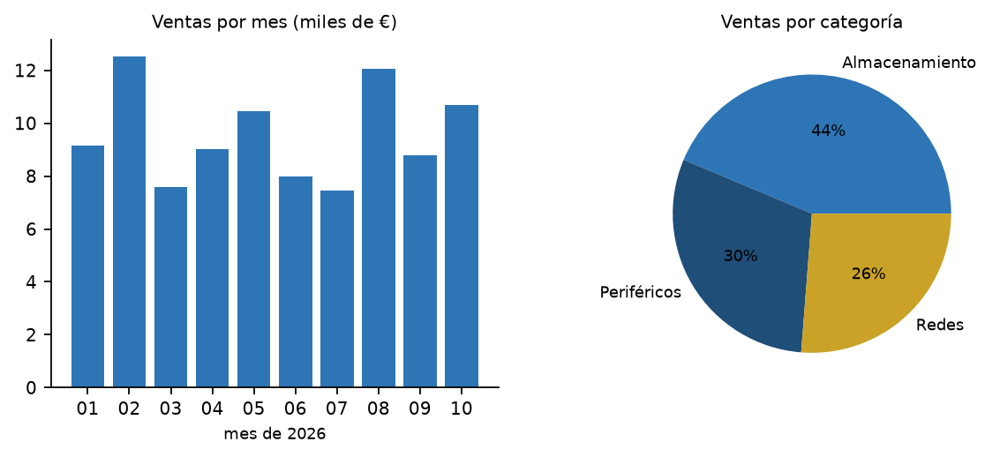
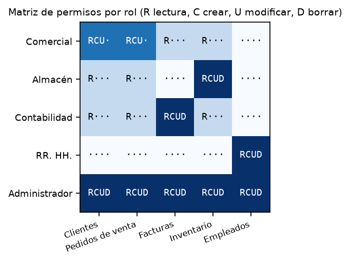
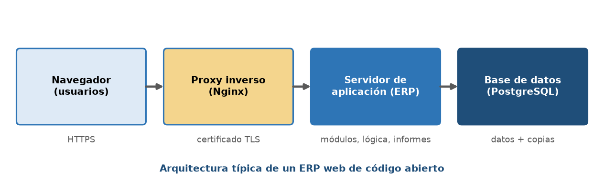
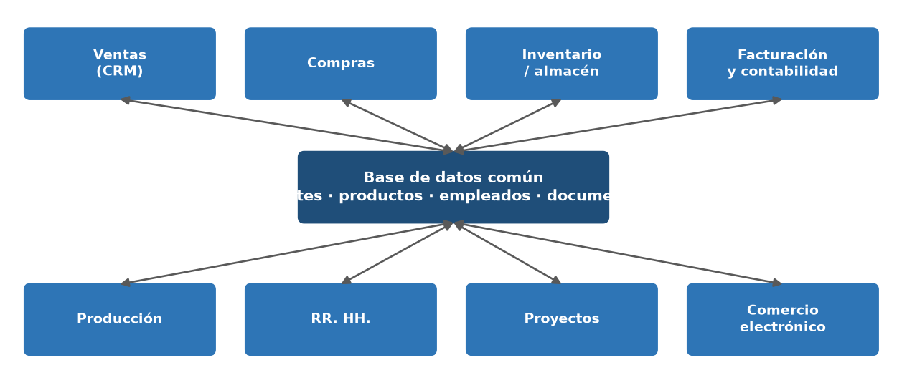

Inicio › UT7
Datos de ejemplo inventados. Este informe se generó con consultas SQL sobre una base de datos ficticia de ventas. No es un ERP real.
Informe de ventas

Roles y privilegios

Arquitectura típica y módulos


Más demos interactivas
- Seguridad: contraseñas y roles — política de contraseñas y matriz de roles con auditoría.